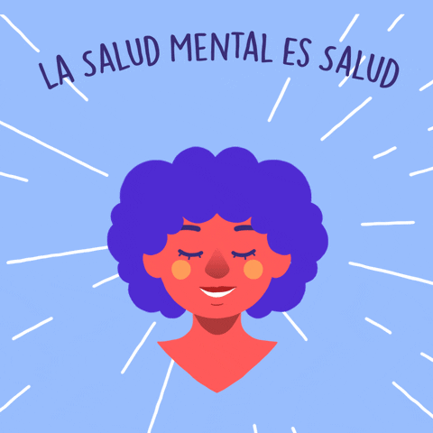
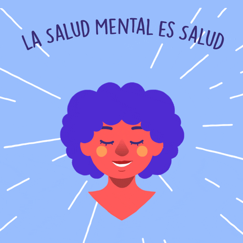

Aplicaciones Útiles
Plataformas de apoyo
Aquí podrás encontrar recursos o páginas que te ayudarán a mejorar y cuidar tu salud mental.
Libros Recomendados
- El Poder del Ahora - Eckhart Tolle
- Mindset - Carol S. Dweck
Encuentra herramientas y materiales para mejorar tu bienestar emocional.
Aquí podrás encontrar recursos o páginas que te ayudarán a mejorar y cuidar tu salud mental.
